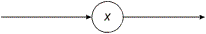
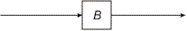
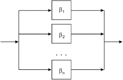
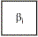
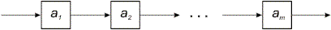
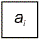
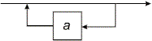
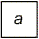
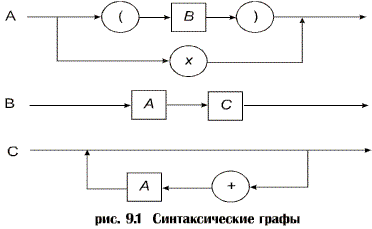
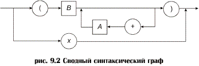

Правила построения синтаксического графа.
А1. Каждый нетерминальный символ A с соответствующим множеством порождающих правил
A::=β1 | β2 |...| βn
отображается в синтаксический граф A, структура которого определяется правой частью порождающего правила в соответствии с А2-А6.
А2. Каждое появление терминального символа x в βi соответствует оператору распознавания этого символа во входном предложении. На графе это изображается ребром, помеченным символом x, заключенным в кружок или овал:

А3. Каждому появлению нетерминального символа B в βi соответствует обращение к процедуре распознавания B. На графе это изображается ребром, помеченным символом B, заключенным в прямоугольник:

А4. Порождающее правило, имеющее вид A::= β1 | β2 |...| βn

отображается в граф, где каждое  получено применением правил А2-А6 к βi .
А5. Строка β, имеющая вид β=α1 α2 ... αm отображается в граф

где каждое  получено применением правил А2-А6 к αi .
А6. Строка β, имеющая вид β={α}* отображается в граф

где  получено применением правил А2-А6 к α .
Пример.
A::=x | (B),
B::=AC
C::={+A}*
Здесь "+", "x", "(" и ")" – терминальные символы, а "{" и "}" являются метасимволами. Язык, порождаемый из A, состоит из выражений с операндами x, знаком операции "+" и скобками.
Примеры предложений:
x (x) (x+x) ((x))
Графы, полученные с помощью применения шести правил построения графов, показаны на рис.9.1. Заметим, что эту систему графов можно свести в один граф, подставив соответственно C в B и B в A (см. рис.9.2).
Синтаксический граф является эквивалентным представлением грамматики языка; его можно использовать вместо множества порождающих правил БНФ. Это очень удобная форма, и во многих (если не в большинстве) случаев она предпочтительнее БНФ.

Граф является подходящим представлением, которое может служить отправной точкой для разработчика языка.

Граф дает ясное и точное представление о структуре языка, а также позволяет лучше представить себе процесс грамматического разбора.
Для того чтобы обеспечить детерминированный грамматический разбор с просмотром вперед на один символ, были установлены LL(1)- ограничения, при графическом представлении синтаксиса они проявляются следующим образом.
1. При каждом разветвлении можно выбрать ветвь, по которой будет идти дальнейший разбор по очередному символу на этой ветви. Это означает, что никакие две ветви не должны начинаться с одного и того же символа.
2. Если какой-либо граф A можно пройти, не читая вообще никаких входных символов, то такая "нулевая ветвь" должна помечаться всеми символами, которые могут следовать за A. (Это влияет на решение о переходе на эту ветвь).